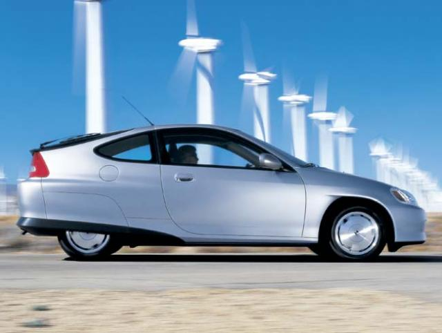

Formula Hybrid
The inaugural Formula Hybrid International Competition was held May 1-3, 2007 at the New Hampshire International Speedway, Loudon, NH, USA. College and university students from the US and Canada took up the challenge to construct and race gasoline-hybrid powered, open-wheel racecars.
 2007 Formula Hybrid Teams and CarsImage courtesy of Doug Fraser, Thayer School of Engineering at Dartmouth College
2007 Formula Hybrid Teams and CarsImage courtesy of Doug Fraser, Thayer School of Engineering at Dartmouth College
Formula Hybrid was conceived by Doug Fraser from Thayer School of Engineering at Dartmouth College after Dartmouth engineering students contemplated entering a hybrid racecar in the 2003 Formula SAE (FSAE) competition. FSAE is a popular student racecar construction and racing competition. The Dartmouth team wanted to exploit the fact that electric motors provide higher torque, and therefore acceleration, at low speeds when compared to typical internal combustion engines. However, a FSAE rule change effectively banned hybrid drivetrains and motivated Fraser to launch the Formula Hybrid competition with support from the Society of Automotive Engineers (SAE) and the Institute of Electrical and Electronics Engineers (IEEE). The format of this competition is similar to the FSAE competition with the following events:
- Acceleration run – assesses a car's straight line acceleration
- Autocross – assesses a car's maneuverability on a tight course
- Endurance race – assesses a car's overall performance and reliability
- Design and marketing – assesses a team's ability to present a business case for car manufacture and operation in an environmentally sensitive and energy efficient manner
The hybrid twist is that each driving event must be completed with a limited amount of fuel – according to the rules, "the amount of fuel allotted to each team will be 85% of the organizers' best estimate of what an average FSAE car would consume running the same events." Also hybrid competitors are encouraged to recycle and repurpose parts from other racecars, whereas FSAE racecars must be constructed from scratch each year.
The most challenging and essential feature of a hybrid vehicle is the energy recovery system used during braking, referred to as regenerative braking. The energy ordinarily lost to heat during braking is recovered in an electric-gasoline hybrid by means of a generator. The generator creates electrical power while the vehicle is braking and uses it to charge accumulators (batteries or capacitors). The stored electricity can later be used by an electric motor to assist vehicle acceleration and cruising, improving overall efficiency.
The Dartmouth hybrid team entered 2 cars in the Formula Hybrid competition with different drive systems, highlighting the two main drive system configurations used in the competition. One car was a series hybrid, which used a gasoline engine to charge accumulators and then an electric motor to drive the wheels. The other car was a parallel hybrid, which used the gasoline engine to drive the wheels with assistance from an electric motor. The parallel hybrid configuration is commonly found on mass-produced hybrids such as the Toyota Prius and Honda Insight.
Honda InsightUses a parallel hybrid drivetrain
The high-power electrics and electronics essential to a hybrid system add an extra level of complexity to the vehicles in the Formula Hybrid competition, requiring electrical engineering skills in addition to traditional mechanical engineering expertise. It appeared that Computer-Aided Engineering (CAE) tools played an important role in the design of the vehicles, judging by the high standard of the design presentations and given the relatively short build cycle and restricted budgets (at least compared to Formula 1) for physical testing.
Feedback
Questions? Ideas? Problems?

Recent blog posts
- CFD Simulates Distant Past
- Background on the Caedium v6.0 Release
- Long-Necked Dinosaurs Succumb To CFD
- CFD Provides Insight Into Mystery Fossils
- Wind Turbine Design According to Insects
- Runners Discover Drafting
- Wind Tunnel and CFD Reveal Best Cycling Tuck
- Active Aerodynamics on the Lamborghini Huracán Performante
- Fluidic Logic
- Stonehenge Vortex Revealed as April Fools' Day Distortion Field
 Get our Blog feed
Get our Blog feed
Comments
Results
The colleges and universities (from the USA unless stated) that competed in the 2007 Formula Hybrid competition were:
Colorado State and Drexel, while entered, didn't produce cars in time for the competition.
The final result from 3 days of intense competition was:
Formula 1 Considers Hybrid Drivetrain
Speculation is growing that hybrid drivetrains may find their way into Formula 1 racing. Max Moseley FIA president of the rules governing body for Formula 1, has cited interest in considering devices for regenerative braking. He said that hybrid drivetrains could "...infuse the sport with more power and excitement while eventually helping all car users to conserve energy and improve fuel consumption."
More Results Coverage
The New Hampshire Union Leader has a report on the Formula Hybrid competition results in an article entitled Hybrid auto competition offers glimpse of future, by Roger Amsden.
McGill Hybrid
AutoblogGreen has a post competition article on the winning McGill hybrid.
Official Results
Official results are now available with a breakdown of the various category winners and explanatory notes.
Formula Hybrid 2008
The second running of the Formula Hybrid International Competition will return to New Hampshire International Speedway, Loudon, NH, USA on May 5-7, 2008.
Formula Hybrid 2008 Results
The 2008 Formula Hybrid competition is complete, find out more at Formula Hybrid v2.0.